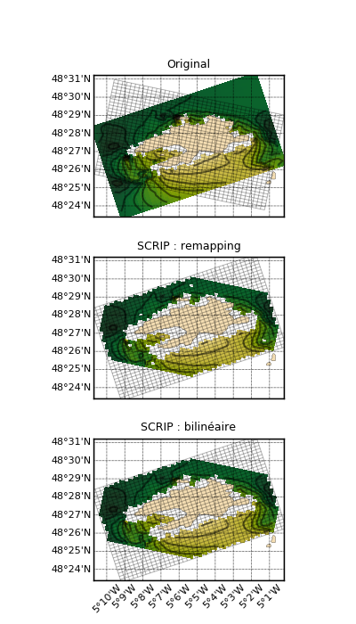

1.3.3.6.3.2.4. D’une grille curvilinéaire vers une grille curvilinéaire¶
Voir : “Interpolation vers grille régulière” regrid2d() add_grid() griddata() scrip() SCRIP.

Regrillage d’une grille curvilinéaire (SWAN) vers une autre grille curvilinéaire, avec Natgrid et SCRIP.
# -*- coding: utf8 -*-
# Lecture des donnees
from matplotlib import rc;rc('font', size=11)
import cdms2, MV2
from vacumm.config import data_sample
zone = dict(yc=slice(0, 40), xc=slice(10, 40))
f = cdms2.open(data_sample('swan.four.nc'))
lon2d = f('longitude', **zone)
lat2d = f('latitude', **zone)
hs = MV2.masked_values(f('HS', squeeze=1, **zone), f['HS']._FillValue)
dlon = float(f.longitude_resolution)
dlat = float(f.latitude_resolution)
f.close()
# Affectation de la grille curvilineaire à la variable
from vacumm.misc.grid import curv_grid, set_grid
cgridi = curv_grid(lon2d, lat2d)
hs = set_grid(hs, cgridi)
# Rotation de la grid
from vacumm.misc.grid import rotate_grid
import numpy as N
cgrido = rotate_grid(hs.getGrid(), -30)
print 'Regrillage'
from vacumm.misc.grid.regridding import regrid2d
print ' - par SCRIP/conservative'
hs_scripcons = regrid2d(hs, cgrido, 'conservative')
print ' - par SCRIP/bilineaire'
hs_scripbilin = regrid2d(hs, cgrido, 'bilinear')
print 'Plots'
from matplotlib import rcParams ; rcParams['font.size'] = 10
import pylab as P
from vacumm.misc.plot import map2, savefigs, xhide, yhide, add_grid
P.figure(figsize=(4, 7))
P.subplots_adjust(hspace=.28, bottom=.07, left=.08, right=.98)
kwplot = dict(show=False, colorbar=False, vmin=hs.min(), vmax=hs.max(),
drawparallels_size=8, drawmeridians_size=8, drawmeridians_rotation=45.,
xhide='auto', yhide='auto')
m = map2(hs, title='Original', subplot=311, **kwplot)
add_grid(cgrido, lw=.7, alpha=.3)
map2(hs_scripcons, title='SCRIP : remapping', subplot=312, m=m, **kwplot)
add_grid(cgridi, lw=.7, alpha=.3)
map2(hs_scripbilin, title=u'SCRIP : bilinéaire', subplot=313, m=m, **kwplot)
add_grid(cgridi, lw=.7, alpha=.3)
savefigs(__file__)
P.close()